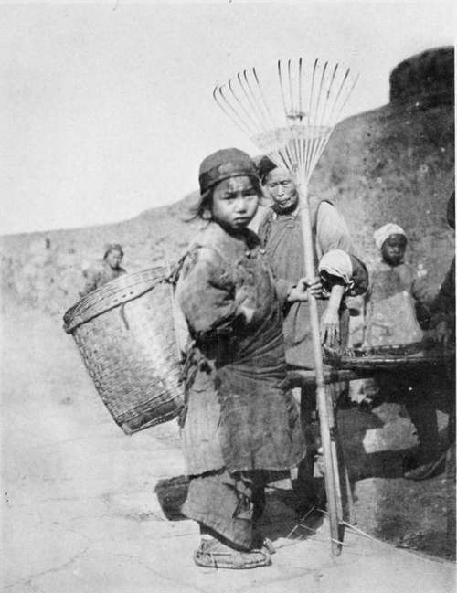

IV. Pere Perrin. Continued
Description
This section is from the book "Foreign Magic: Tales of Every-Day China", by Jean Carter Cochran. Also available from Amazon: Foreign Magic: Tales of Every-Day China.
IV. Pere Perrin. Continued
Thus quickly was relief work under way, but before leaving for the boat Pere Perrin wrote the following letter: *
March 1st, 1911.
Dear Dr. Scott:
I thank you most heartily for your kind letter and your sympathy toward our poor Christians. Poor certainly they are, and in some districts the starving are the great majority. In one locality, for instance, where the ground is low and can hardly support the inhabitants in good years, the mortality has been very great and must still increase. Our work is now too extensive for our resources, and the laws passed against the church oblige our friends at home to start so many good works that the alms sent out to foreign missions are yearly decreasing. If difficult to balance the account in common years, what difficulty in a time of famine! And yet it is not this reason that prompts me to appreciate your kindness, when you cut out such a big part of your own funds to be able to help us. There are many pagans as destitute as our Christians, but you see in them people redeemed by the blood of our Saviour, sons of the same Lord, future partakers, as I hope, of eternal bliss, and there united forever. What you are doing now is one of such deeds that must be known "ut vidsant opera vesta bone et glorificent Patrum vestrum qui in caelo est." I trust it will lead some to a better view of things, and destroy some prejudice here on earth.
* This letter is an exact copy of a letter written by Pere Perrin, a Belgian priest, to an American doctor. Pere Perrin's own name has been retained in this volume as a tribute to his saintly character and to the unselfish service in which he gave his life.
I will distribute your funds to the different districts, requesting our missionaries to have it served out to our Christians in your name and require them to pray at all our intentions, especially for you and the mission staff of your station.
I will do the same myself and beseech our Lord to supply me in granting his divine blessing. Believe me, dear doctor,
Yours most faithfully,
Perrin F.
During the next few weeks Pere Perrin hardly took time to eat; friendly officials promised to aid him, but he had to superintend everything to see that the people received their due portion and that none of it stuck to official fingers. Rumours began to reach him that illness had broken out in Feng Ti Fu, and that the people were dying like flies. At length a Chinese came to him with a sad face and told him he had just had a letter from his brother in that city, saying that Dr. Scott and another missionary had been stricken and that the doctor's life was despaired of.
A Fuel Gleaner From The Group Of Patient-Spirited People In A Famine-Stricken Village.
"It is strange, Pere Perrin, but the people in the street who love him for his kind deeds are saying, 'He saved others, himself he cannot save.' They do not know that this was said of one other long ago."
"Nor do they know the power of prayer to our good God," replied Pere Perrin firmly.
Immediately Pere Perrin sent word to the priests at his chapels that masses should be said twice daily for his friend's recovery. He himself worked all day, and now that Pere Le Brun was away no one knew how long were his night vigils on behalf of his people and the man who lay so ill. But his frail human frame could not stand the strain; one morning he awoke too giddy to arise, and lay there burning with fever. Lao Liu wished to send immediately for Pere Le Brun but he was strictly forbidden to do so.
"Would you have all those people die whom he is trying to save? It is bad enough for me to give up; neither will I have him exposed to contagion. For the same reason you may not take me to the hospital at Feng Ti Fu; I will not endanger the lives of our friends there; we must worry through alone."
Unfortunately, Pere Perrin's ideas of medicine and of the treatment of fevers had been brought with him from France fully fifty years before. He ordered Lao Liu to seal up the windows so that no breath of air should reach him, and to give him no water, no matter how much he might plead for it. Under this regime he grew steadily worse and, finally, at the end of the week yielded to Lao Liu's entreaties that the boat should sail up the river to Feng Ti Fu. Now nearly delirious, Pere Perrin wrote a note to the hospital asking for shelter. His English was almost forgotten, and the letter written by fever-shaken fingers was so illegible that the Americans could not read it.
The consequence was that when Lao Liu arrived with his loved master on a stretcher, they were not prepared for a patient; but they all loved Pere Perrin, and a vacant room was soon made ready, and the old priest was presently resting comfortably in a clean bed. His friend, Dr. Scott, had passed the crisis and was slowly coming back to the life which he thought that he had laid down forever. He was still too ill to attend Pere Perrin, but the same skilful doctor and nurse who had saved him were eager to serve the saintly priest. Everything that human tenderness could do was done, but worn out with privations and long vigils, Pere Perrin gradually sank. Pere Le Brun was sent for and one glance at Pere Perrin told him the story. He asked that he might administer the last rites of the church, and the sad office was soon performed. When the little service was over he still knelt beside his old comrade; the nurse standing near saw the sick man's lips moving, and she whispered to Pere Le Brun,
"Look, he is trying to speak."
But Pere Le Brun shook his head and answered, "Pere Perrin always prayed as he lived and he will die praying."
It was a beautiful May morning when Pere Perrin went to sleep. The gardens were full of the scent of blossoms, and all the walks were edged with iris; the arches were covered with a little white climbing rose which the Chinese call the "Tree of Fragrance," and that looked like a filmy cloud against the blue background of the sky. The Mission group gave Pere Perrin of the best they had, softly lining the rude coffin and casting over it a pall of purple cloth; on this they laid a cross of lavender iris.
"He deserves a monarch's colours," they told Pere Le Brun, "though we doubt if any monarch was ever so greatly loved."
Late that afternoon they bore him back to his own people. A little group gathered on the hospital steps to say farewell. They watched the sad procession go down the flowery path to the gate, and then lost sight of it for a few minutes as it passed through the city streets; but later they saw it take the narrow road through the young budding wheat until the winding river was reached. Pere Le Brun walked beside his friend as he had done for the last fifty years.
With tear-dimmed sight they turned to leave and found, standing behind them, the quiet, dignified figure of the Confucian teacher. "Ah, Ladies!" he exclaimed, "we Chinese find a proverb in our sacred Mencius: 'The great man is he who does not lose his child's heart'."
Continue to: